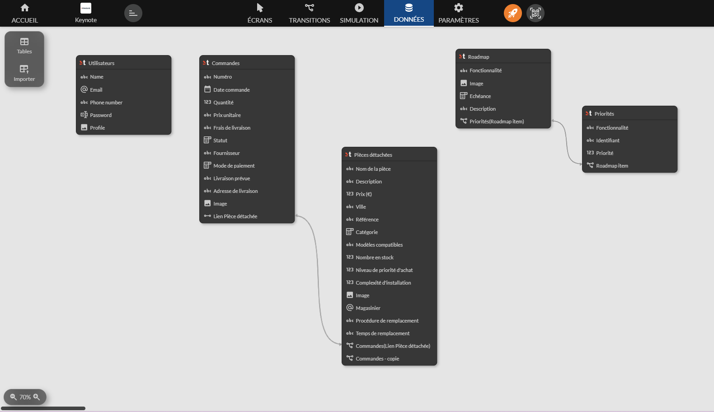
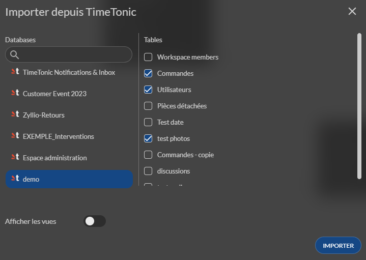
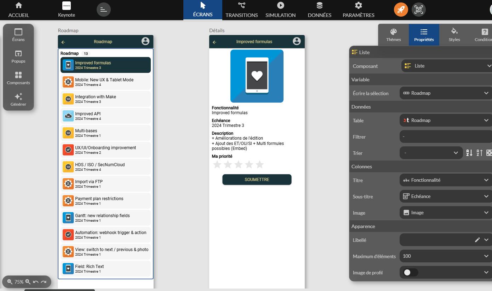
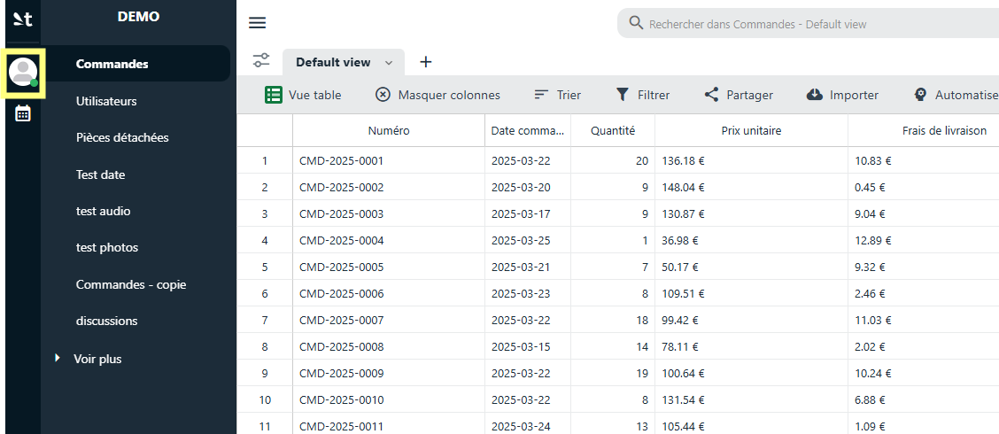
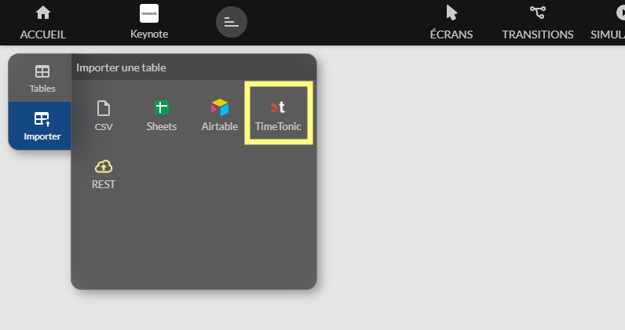

Timetonic
Zyllio vous permet de connecter facilement vos bases de données Timetonic à une application sans avoir besoin de connaissances en programmation.
Grâce à cette intégration, vous pouvez accéder, visualiser et interagir avec vos données Timetonic en temps réel, directement depuis votre application.
Configuration
Configuration Timetonic
Avant de commencer à importer vos tables et vues Timetonic, vous devez configurer l'intégration Timetonic
Voici les étapes à suivre
- Se connecter à son compte Timetonic
- Accéder aux paramètres de votre compte

- Ensuite sélectionnez l’option Paramètres dans le menu de gauche
- Cliquer sur le bouton Ajouter une nouvelle clé d’API et sélectionner les options suivants ci dessous

- Valider la création de la clé d’API
- Une fois crée, cliquer sur le bouton Copier pour copier la clé d’API

- Notez également l’identifiant de votre compte depuis Informations Compte

Configuration Zyllio
- Se connecter à Zyllio
- Sélectionner l’application à intégrer à Timetonic
- Sélectionner l’onglet Settings puis Timetonic
- Activer l’intégration Timetonic
- Coller la clé d’API copiée depuis le portail Timetonic et l’identifiant utilisateur comme suit

Importation de tables et vues Timetonic
Depuis l’onglet Database, cliquer sur l’option Timetonic dans la section Import table à gauche

Ensuite sélectionner la ou les tables à importer. Cette opération peut être réitérée pour importer d’autres tables ultérieurement

Une fois validé, Zyllio importe l’ensemble des tables sélectionnées ainsi que les types de champ et leurs relations. Exemple de 5 tables importées avec relations

Les champs calculés comme les formules, lookup, rollup, et id ... sont indiqués avec un cadenas. Ces champs ne sont pas modifiables depuis Zyllio
Des ajustements sont parfois nécessaires pour indiquer à Zyllio davantage d’informations sur le type du champ. Par exemple, le champ Image de la table Products est de type Lien puisque Timetonic définit le type Fichiers. Pour indiquer que cet attachement est une image il suffit de changer son type depuis Zyllio, ainsi ce champ Image sera automatiquement sélectionné par Zyllio dans ses composants
Utilisation des tables dans l’application
Une fois les tables et vues importées, vous pouvez utiliser les données depuis l’éditeur d’écran
Depuis l’onglet Design, créer un écran en sélectionnant une table Timetonic comme illustré

Synchronisation de structure
Lorsque vous effectuez des changements de structure dans vos tables Timetonic, par exemple un ajout de champ, ces changements n’apparaissent dans Zyllio
Pour synchroniser ces changements, cliquer sur le bouton Rafraichir les colonnes. Une fois le processus de synchronisation lancé, Zyllio va ajouter et supprimer les champs en fonction des changements
Zyllio ne modifie jamais la structure des tables Timetonic dans votre compte Timetonic. Seule la définition Zyllio peut être modifiée depuis Zyllio
Synchronisation de données
Zyllio met en place un cache de données pour améliorer les performances d’accès à Timetonic en fonction de l’utilisation des tables Timetonic. Ainsi, des modifications depuis Timetonic ou une automatisation externe risque de ne pas être visible immédiatement depuis Zyllio. Un délai de 1 mn maximum peut être nécessaire
Pour forcer le rafraichissement, cliquez sur le bouton Rafraichir les données